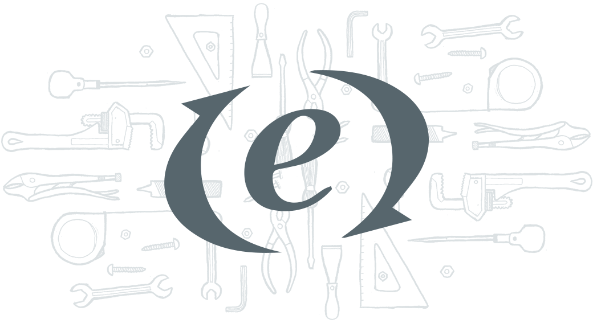

L’Étang des Moulins hosts many shows through ought the year, offers cooking classes and it the perfect place to go with a group. The website is an essential tool to make all of this possible. Here's our three main goals for the project.
Modernize the site
Over 1.2 billion people access the web from their mobile devices. Sprout uses responsive design techniques to make sure your website is accessible on mobile devices like iPhone, iPad and more.
Accessibility
Over 1.2 billion people access the web from their mobile devices. Sprout uses responsive design techniques to make sure your website is accessible on mobile devices like iPhone, iPad and more.
Use the site
Over 1.2 billion people access the web from their mobile devices. Sprout uses responsive design techniques to make sure your website is accessible on mobile devices like iPhone, iPad and more.
Responsive Web Design
With about half of their traffic coming from mobile devices, it was obvious that the new site should be built using responsive design techniques. We adopted a device agnostic approach, adding breakpoints to optimize the design for a multitude of viewports.
We needed to find typefaces that would evoke the ones used in the logo, but that would modernize the style of the site to make it more appealing to younger people. We settled on Proxima Nova for the body text and Rouge Script to bring a little personality to the headers.
A huge time saver
The main goal of this project was to offload a lot of the tasks that previously took a lot of time on the owners to the website. We did that by allowing people to easily see events happening, look at the menu and book a reservation straight from the site.

The right tool for the job
The whole site is powered by the very flexible ExpressionEngine CMS. This allowed the owners to change and update the content of their site any time they liked.